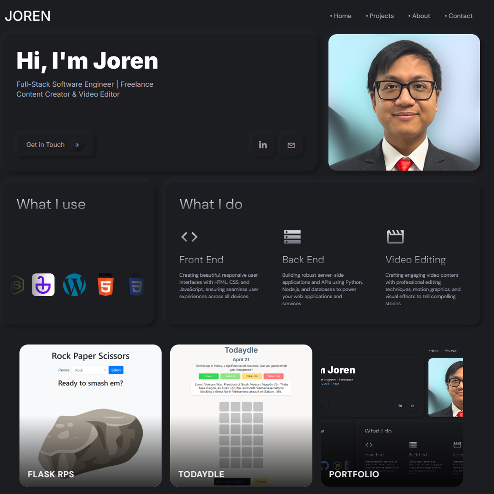

Portfolio
A modern portfolio website built with HTML, CSS, and JavaScript, showcasing my web development projects and professional journey.
Category
Personal Website
Technologies Used
Webflow, HTML, CSS, Javascript
year
2025


Project Overview
This portfolio website represents my journey in web development, starting with Webflow and evolving into a custom-coded solution using HTML, CSS, and JavaScript. The project showcases my ability to adapt and enhance existing designs while implementing modern web development practices.
Development Journey
The project began as a Webflow template and was later customized and enhanced through direct code implementation:
- Initial design and structure using Webflow's visual interface
- Transition to Visual Studio Code for custom development
- Implementation of custom features and optimizations
- Integration of responsive design principles
- Enhancement of user experience and performance
Technical Implementation
The website is built using a modern web stack:
- Frontend: HTML5, CSS3, and JavaScript
- Design: Custom styling and animations
- Architecture: Modular file structure
- Performance: Optimized assets and loading
Key Features
- Fully responsive design for all devices
- Modern and clean user interface
- Interactive project showcase with detailed case studies
- Contact form for professional communication
- About section highlighting skills and experience
- Optimized performance and loading times
Project Structure
The website follows a well-organized structure:
- css/: Custom stylesheets and animations
- js/: Interactive features and functionality
- images/: Optimized visual assets
- projects/: Detailed project case studies
- Core Pages: Home, About, Projects, and Contact
Development Challenges
Several challenges were encountered and overcome during development:
- Transitioning from visual design to code implementation
- Maintaining design consistency across all pages
- Optimizing performance for various devices
- Ensuring cross-browser compatibility
- Implementing responsive design principles
Learning Outcomes
This project provided valuable experience in:
- Frontend web development
- Responsive design implementation
- Performance optimization
- User experience design
- Project organization and structure